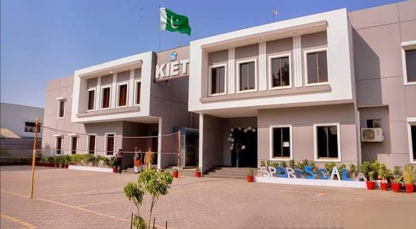
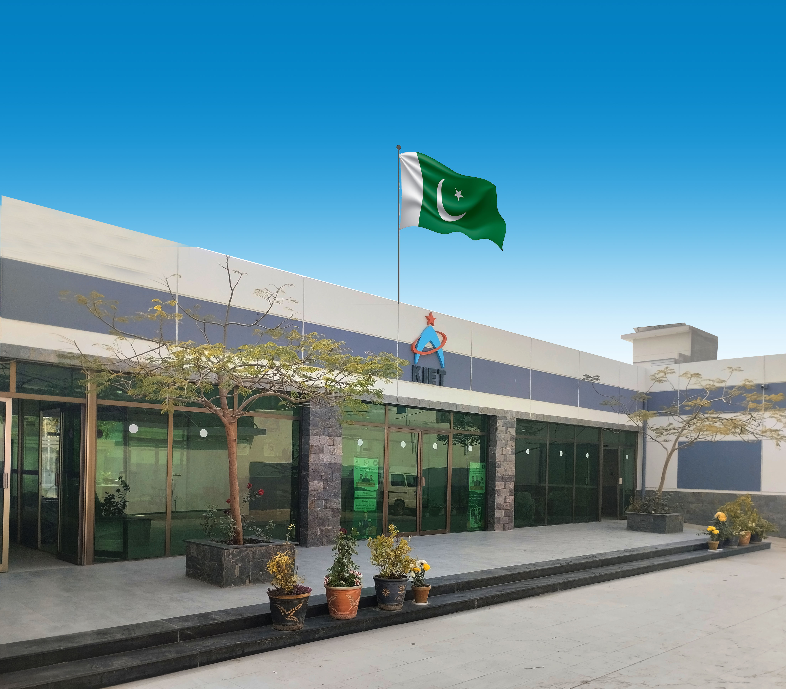
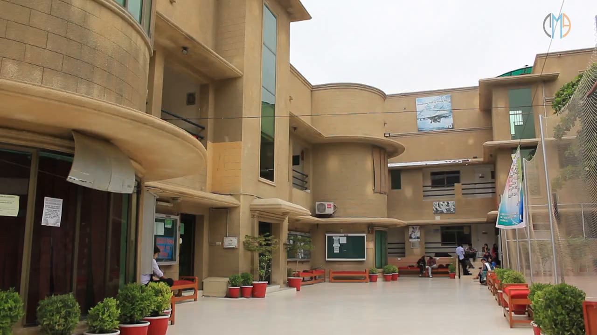

Karachi Institute of Economics and Technology (KIET) was established in 1997. We offer quality education in Computing, Engineering, Management Sciences, and Media Arts.
Karachi Institute of Economics & Technology (KIET) was founded in 1997 to provide world-class, affordable higher education. Chartered by the Sindh Provincial Assembly and recognized by the Higher Education Commission (HEC) in the top category.
KIET offers market-relevant degree programs in Artificial Intelligence, Software Engineering, Electrical Engineering, Business Administration, and Media Arts.

The guiding values that inspire students and faculty at KIET.
To be an internationally recognized center of excellence in education and research, producing leaders, innovators, and entrepreneurs who contribute to the development of society and the economy.
To impart high quality education through student-centric teaching, practical laboratory training, updated curricula, and strong industry linkages to develop competent and ethical professionals.
KIET has three well-equipped campuses located in Karachi.

